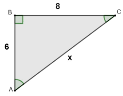
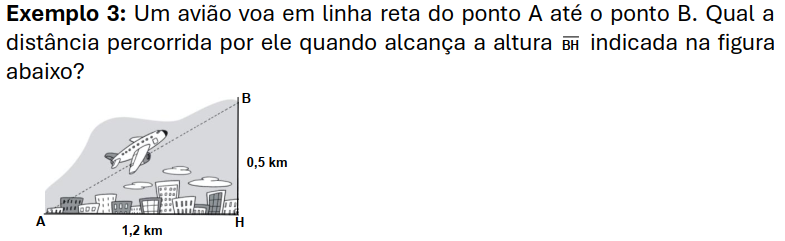
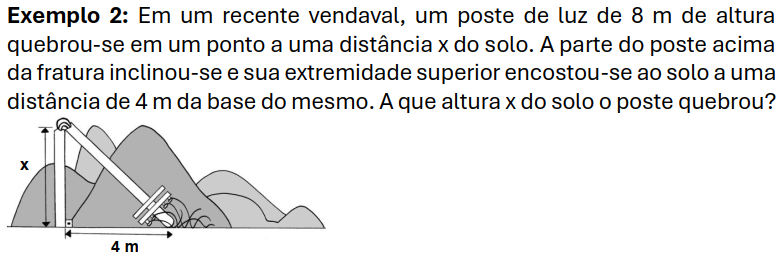
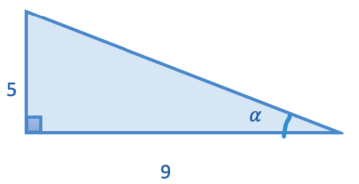

Trigonometria no triângulo retângulo
Um triângulo retângulo é um triângulo que possui 90° em um dos ângulos internos dele
-
Teorema de Pitágoras
-
Relações trigonométricas
- Seno (sen)
- Cosseno (cos)
- Tangente (tg)
O Teorema de Pitágoras é a primeira relação entre medidas
de um triângulo retânculo que aprendemos.
Basicamente ela diz que a soma de cada cateto elevado ao
quadrado, é igual a hipotênusa ao quadrado.
Matematicamente: c2 = a2 + b2
Ex:

Imagem tirada da Brasil Escola
Aqui vemos dois catetos, de medidas "8" e "6".
Aplicando Pitágoras: c2 = 82 + 62
c2 = 64 + 36
c2 = 100
c = √100
c = 10
Para estas relações, precisamos nomear cada cateto, por isso,
um se chamara oposto(CO) e o outro adjacente(CA).
O cateto ser chamado de oposto ou adjacente depende do ângulo
de referência que estamos observando.
A hipotenusa(h) sempre permanece hipotenusa independentemente
do ângulo de referência.
Estudamos estas 3 principais relações entre ângulos:
sen = CO/h
cos = CA/h
tg = CO/CA
Essas relações sempre permanecem verdadeiras independentemente do tamanho dos catetos ou hipotenusa do triângulo retângulo.
Usos:
Podemos usar estas relações para muitos cálculos matemáticos geométricos
e também para medir determinadas coisas na vida real, como por exemplo,
a atividade em aula que fizemos com o teodolito para medirmos construções
do IFRS campus Erechim.
Ex 1:

Imagem tirada do material disponibilizado pela professora
Aqui podemos aplicar pitágoras, vamos chamar a hipotenusa de "h":
h2 = 1,22 + 0,52
h2 = 1,44 + 0,25
h2 = 1,69
h = √1,69
h = 1,3km
Ex 2:

Imagem tirada do material disponibilizado pela professora
Aqui também podemos aplicar pitágoras, vamosextrait as informações:
altura total = 8
altura em que quebrou (isso é um cateto) = x
cateto = 4
hipotenusa = h
Aqui podemos observar que a altura total é a hipotenusa mais o cateto de valor "x"
altura total = h + x
h = x - altura total
h = x - 8
Vamos calcular:
h2 = a2 + b2
(x - 8)2 = 42 + x2
(x - 8)*(x - 8) = 16 + x2
x2 -8x - 8x + 64 = 16 + x2
x2 -16x + 64 - 16 = + x2
x2 -16x + 48 = + x2
x2 -16x - x2 = -48
-16x = -48
16x = 48
x = 48/16
x = 3m
OBS: Fiz isso com pesada ajuda do material
Para achar ângulos a partir de seno, cosseno, ou tangente, usamos o:
Arco Seno (arcsen) (também pode ser representado com "sen-1"),
Arco Cosseno (arccos) (também pode ser representado com "cos-1") e,
Arco Tangente (arctg) (também pode ser representado com "tg-1")
Não aprendemos a calcular eles na mão, então sempre utilizamos a ajuda
de uma calculadora matemática para sabermos seus valores
Ex:

Imagem tirada do material disponibilizado pela professora
Aqui usaremos a arco tangente, mas primeiro precisamos descobrir a tangente:
tg = CO/CA
tg = 9/5
arctg(tg) = arctg(9/5)
arctg(9/5) = α
29,05° = α